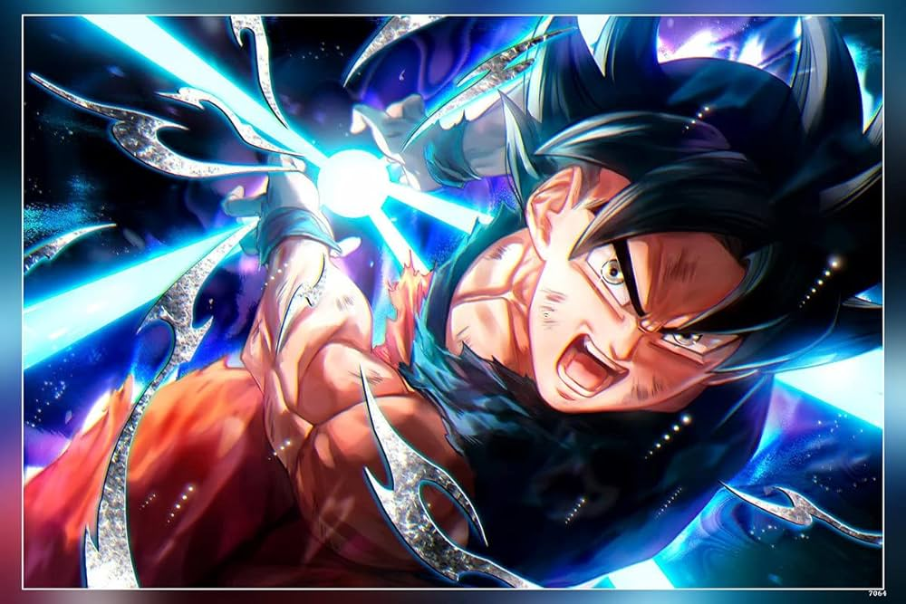
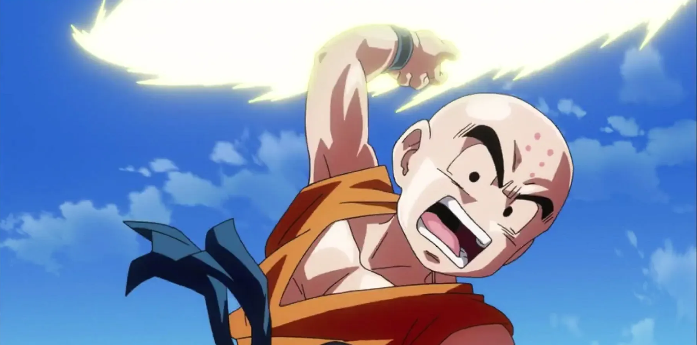
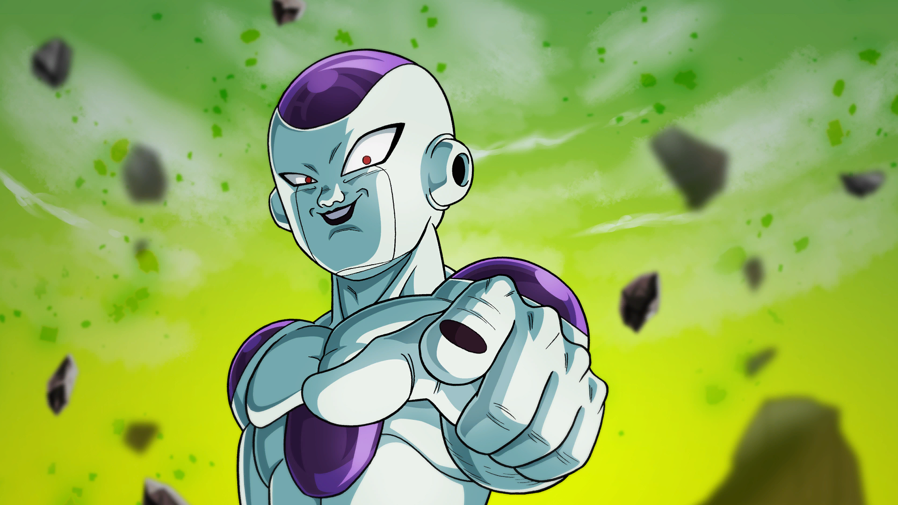
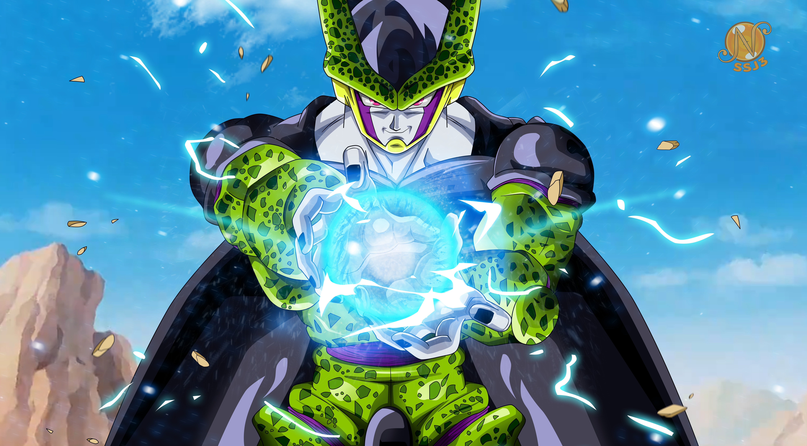
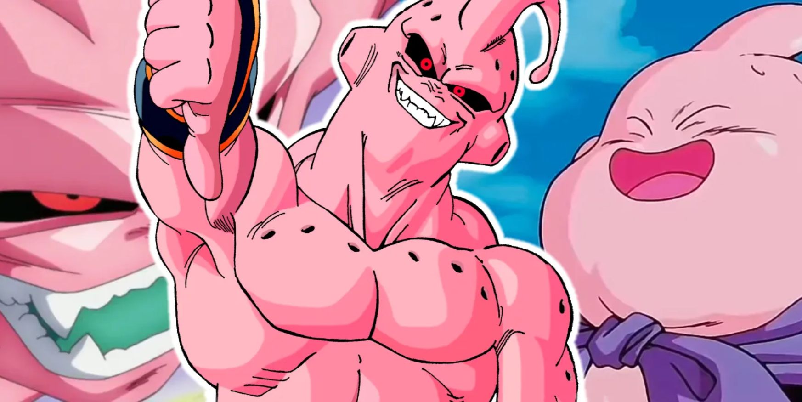
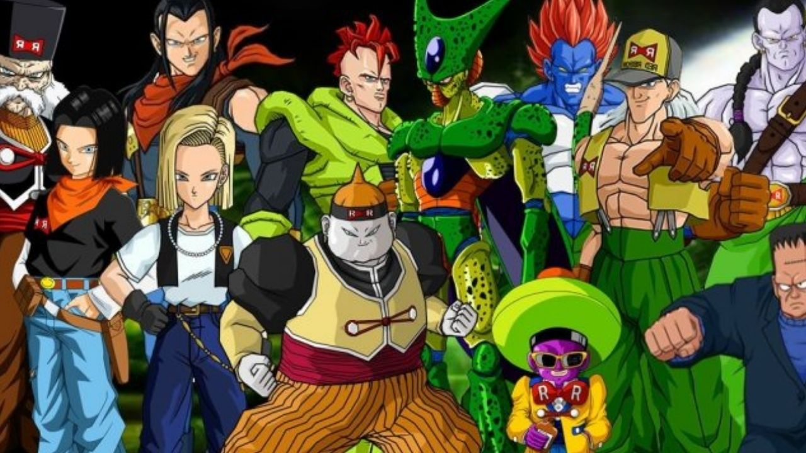
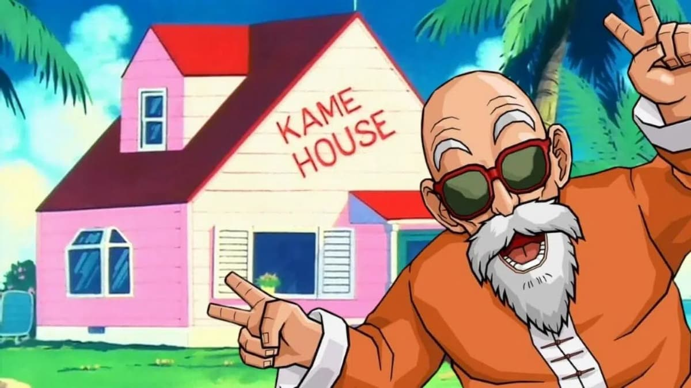

.

Goku
Goku, o guerreiro Saiyajin em Dragon Ball Z, é movido por uma inextinguível busca por poder e superação. Enfrentando desafios como Freeza, Cell e Majin Buu, ele transcende seus próprios limites para proteger o universo e seus entes queridos. Sua transformação em Super Saiyajin 3 culmina em uma batalha épica contra Majin Buu, exibindo uma inabalável força de vontade. Além de suas habilidades de combate excepcionais, Goku é conhecido por sua lealdade e amizade com Vegeta, Gohan e Piccolo.

Vegeta
Vegeta, príncipe Saiyajin em Dragon Ball Z, inicialmente rivaliza com Goku devido ao seu orgulho de linhagem. Ao longo da série, ele passa por uma notável evolução, abandonando sua natureza arrogante e se tornando um aliado valioso na defesa do universo. Sua rivalidade com Goku se transforma em uma amizade profunda, e Vegeta se destaca como um dos guerreiros mais poderosos da Terra. Com sua esposa Bulma e filho Trunks, revela um lado mais humano, dedicado à proteção de sua família e do mundo que passou a chamar de lar. Sua jornada de redenção e crescimento o torna um personagem icônico na saga Dragon Ball.

Piccolo
Piccolo, inicialmente um vilão em Dragon Ball, é um Namekuseijin solitário e poderoso. Ele se une a Goku para enfrentar ameaças maiores, como os Saiyajins e Cell. Ao longo da série, Piccolo passa por uma notável transformação, tornando-se um aliado leal e mentor de Gohan. Sua sabedoria e habilidades de luta o destacam como um dos guerreiros mais confiáveis da Terra. Além disso, sua conexão com Kami e posterior fusão com Nail e Kami demonstram sua busca pela harmonia e força máxima. Piccolo é um personagem essencial na saga Dragon Ball, combinando poder e sabedoria em sua luta pela paz.

Kuririn
Kuririn, um dos personagens mais queridos em Dragon Ball, é um humano e fiel amigo de Goku desde a infância. Apesar de sua falta de habilidades sobre-humanas, ele se destaca como um guerreiro corajoso e estratégico. Ao longo da série, Kuririn demonstra uma notável determinação, enfrentando desafios como os Saiyajins e enfrentando inimigos formidáveis ao lado de Goku. Sua relação romântica com Android 18 e sua dedicação à família a tornam uma parte essencial da comunidade dos guerreiros Z. A lealdade e a coragem de Kuririn o tornam um personagem icônico na saga Dragon Ball.

Freeza
Freeza é um dos antagonistas mais formidáveis em Dragon Ball Z. Ele é o imperador cruel e sádico do universo, conhecido por destruir planetas inteiros e subjugar civilizações. Freeza é responsável pela destruição do planeta natal dos Saiyajins, Vegeta, e pelo passado traumático de Goku.A batalha épica entre Goku e Freeza em Namek é um dos momentos mais memoráveis da série, destacando a ameaça iminente que ele representa. A presença dominante e malévola de Freeza o estabelece como um dos vilões mais marcantes na história de Dragon Ball Z.

Cell
Cell é um vilão complexo e poderoso em Dragon Ball Z. Ele é uma bioengenharia perfeita, criada a partir de células de diversos guerreiros, incluindo os Saiyajins, Namekuseijins e humanos. Cell possui a habilidade de se transformar, evoluindo para formas cada vez mais fortes e perigosas. Sua missão é atingir sua forma final, conhecida como "Perfect Cell", para se tornar a criatura mais poderosa do universo. Cell desencadeia uma série de batalhas épicas, culminando em uma confrontação decisiva contra Gohan. Sua capacidade de adaptação e busca implacável por perfeição o tornam um dos vilões mais intrigantes de Dragon Ball Z.

Majin Boo
Majin Boo, também conhecido como Buu, é um dos antagonistas mais peculiares em Dragon Ball Z. Ele é uma criatura rosa, inicialmente dividida em diferentes formas, cada uma com características distintas. A forma mais malévola, conhecida como "Majin Boo Puro", representa uma ameaça imensa ao universo. No entanto, ao longo da série, Boo sofre transformações que levam à criação de uma forma mais benigna e gentil, conhecida como "Majin Boo Bom". Esta dualidade demonstra a complexidade do personagem, oscilando entre bondade e malícia. A jornada de transformação de Boo é uma parte fundamental da narrativa de Dragon Ball Z, destacando temas de redenção e evolução pessoal.

Androids
Os androides em Dragon Ball Z são criações artificiais de alta tecnologia, criadas pelo cientista maligno Dr. Gero. Eles são conhecidos como Androides 16, 17 e 18, e posteriormente Android 19 e 20 (também conhecido como Dr. Gero). Inicialmente, os Androides 17 e 18 são vilões, causando caos e destruição. No entanto, mais tarde, os Androides 16, 17 e 18 revelam uma certa humanidade e mudam de lado, tornando-se aliados dos guerreiros Z. Eles possuem habilidades sobre-humanas, como força e velocidade aprimoradas, bem como uma resistência quase ilimitada. A introdução dos androides na trama de Dragon Ball Z adiciona uma camada de complexidade e imprevisibilidade à narrativa.

Mestre Kami
Mestre Kame, também conhecido como Muten Roshi, é um dos personagens mais icônicos de Dragon Ball Z. Ele é um mestre das artes marciais e foi o treinador de Goku e Kuririn quando eram jovens. Kame é conhecido por sua sabedoria, sua força e, às vezes, por seu comportamento um tanto pervertido. Ele é um mestre das Esferas do Dragão e possui habilidades incríveis de luta, apesar de sua idade avançada. Mestre Kame é famoso por sua técnica poderosa, o Kamehameha, que é uma onda de energia devastadora. Mestre Kame é extremamente sábio e desempenha um papel fundamental na formação dos guerreiros que defendem a Terra ao longo da série Dragon Ball Z.